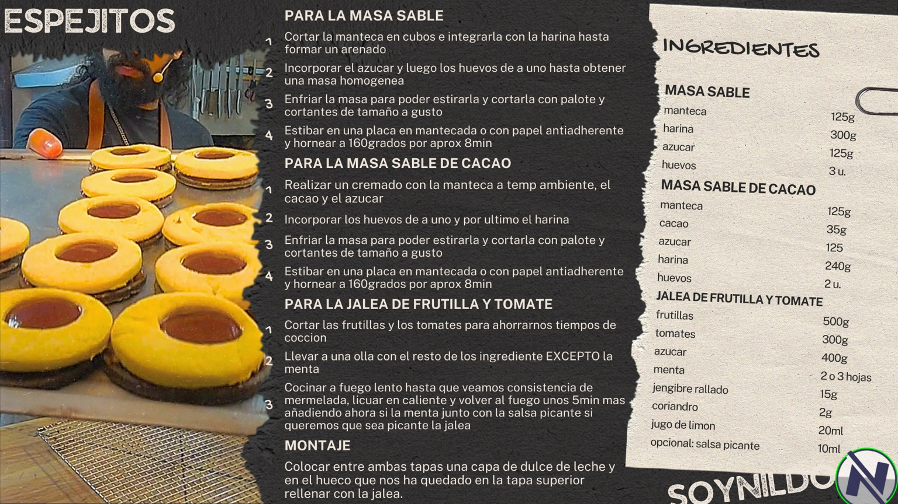
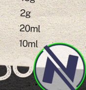
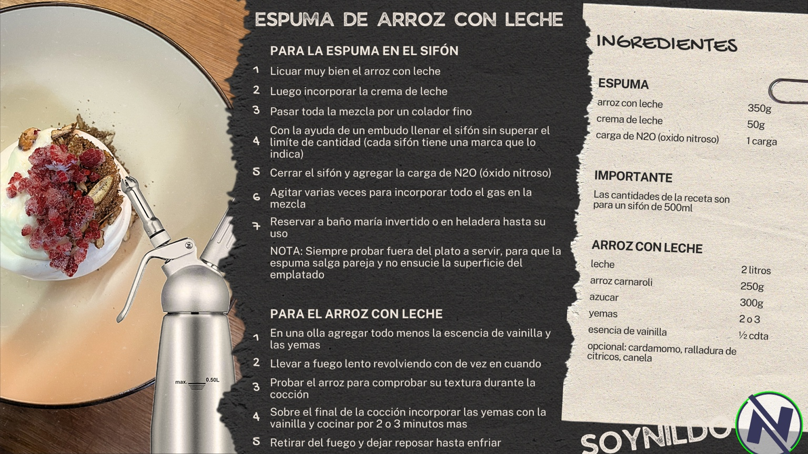

DulceEspejitos
Masa sable clásica y de cacao, relleno de dulce de leche y jalea de frutilla con tomate.

Recetas con identidad
Un rincón de cocina con estética de recetario intervenido, platos con personalidad y una navegación simple para encontrar rápido cada receta.
Menú
Dejé dos recetas cargadas como base visual. Después se pueden sumar todas las demás con el mismo formato.

DulceMasa sable clásica y de cacao, relleno de dulce de leche y jalea de frutilla con tomate.

PostreVersión aireada con sifón, base cremosa y presentación más moderna para postres.
Identidad visual
La propuesta mezcla fondo oscuro tipo pizarra, títulos contundentes, acentos manuscritos y tarjetas de papel para replicar la estética de tus imágenes.
Para GitHub Pages está pensada como sitio estático: liviano, simple de publicar y fácil de ir ampliando con nuevas recetas.
Siguiente paso
Y te dejo el mismo sitio ya poblado completo, con cada receta cargada en este formato y listo para subir al repo.